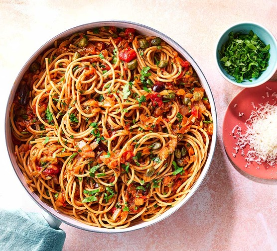

Spaghetti & Pilchard

Description
This dish is a simple, hearty meal that combines pasta with canned pilchard (with tomato sauce), creating a rich and savoury flavour. It's usually enjoyed as a quick-budget friendly meal in many South African households. This meal is filling and nutritious and can be easily adapted with a variety of sauces and spices.
Ingredients
- Onion
- Oil
- Green & Red Pepper
- Canned Pilchard
- 2 Diced Tomatoes
- 1 teaspoon of Crushed Garlic
- Preferred Spices & Sauces
- Spaghetti
- 4 cups of Water
- Salt
Steps
- Prepare your spaghetti by boiling 4 cups of water with salt, at the boiling temperature put your spaghetti in, stir to prevent it from sticking and let it cook for 10 minutes. Drain the water, leaving a bit of the pasta.
- Prepare the pilchard next, by frying your diced onion and diced peppers at a low heat. Add 1 teaspoon of the crushed garlic and your spices, stir and cover the pot for a few minutes.
- Put your canned pilchard in the pot and crush it using a fork until the mixture is
Home